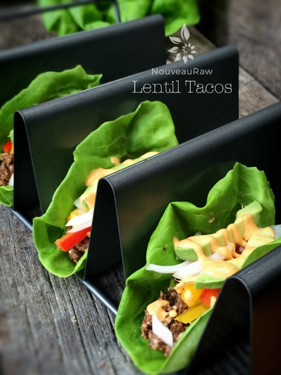
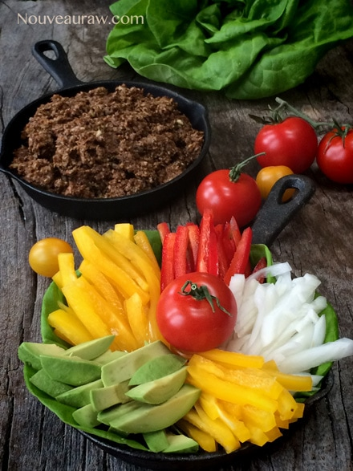
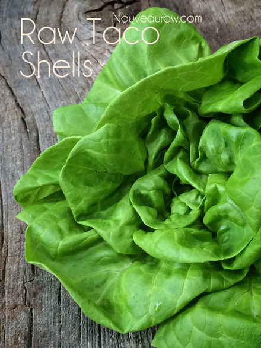
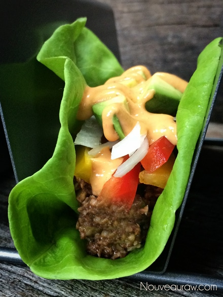
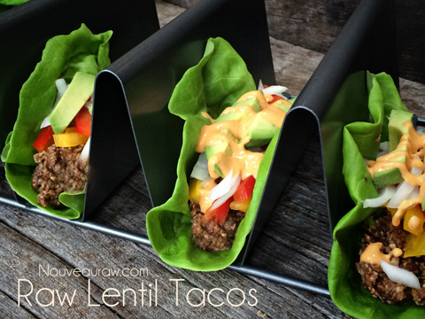

Lentil Tacos

~ raw, vegan, gluten-free, nut-free ~
I believe that every dish of food we plate should be as nutrient-packed as it is tasty. Raw Lentil Tacos serves up both requirements. I used sprouted lentils which are exploding with incredible health benefits such as; abundant source of protein, an excellent source of dietary soluble fiber, and they are alkaline-forming in the body.
Sunflower seeds provide mono-unsaturated oleic acid which helps to lower the “bad cholesterol” and increases the “good cholesterol” in the blood. Sunflower seeds along with the portobello mushrooms are packed with calcium, iron, manganese, zinc, magnesium, selenium, and copper.
Adding in all the beautiful fresh veggies, then tie it all together with the warming fiesta flavors of the taco seasoning…. and well shoot, these tacos make for an excellent meal that is packed full of nutrients and flavor.
For taco shells, I turned to simplicity… butter leaf lettuce. You do have options though. If you want something a bit more fancy, try my Sun-dried Tomato Corn Wraps.
I also have a few other sides that would pair wonderfully with these Lentil Tacos such as; Chili Corn Crackers, Nacho Chili “Cheese”Corn Chips, Refried Beans (unfried-beanless-recipe), or if you don’t want to make the taco “meat” from lentils, you can make my other taco “meat” recipe that uses walnuts. So many wonderful options.
Taco lentil “meat”: yields 2 cups
Taco sauce:
Taco fillings:
- 1 large red bell pepper, sliced into strips
- 1 large yellow bell pepper, sliced into strips
- 1 avocado, sliced into strips
- 1 -2 heads butter lettuce
- salsa
Preparation:
Lentil “meat”:
- Sprout the lentils to enhance their nutritional value.
- Place the sunflower seeds in the food processor, fitted with the “S” blade, and pulse a few times to break them down just a bit.
- Wash and dry the mushrooms. Remove the stems and discard. Place the mushrooms and lentils in the food processor and pulse about 4 times to break them down.
- Add the onion and taco seasoning. Pulse everything together. Be careful not to over-process and turn it into a mash.
- Heating option ~ place the lentil “meat” into a wide-mouthed container that fits inside of the dehydrator. Warm at 115 degrees until it reaches the desired warmth. The “meat” will darken in a bit over time; this is normal and just fine.
- Store in the fridge up to 3 days.
Taco sauce:
- Follow the directions and then place the sauce in a squeeze bottle. This is a wonderful way to drizzle it on the tacos.
Taco fillings:
- Slice everything into strips.
- Select all the large pieces of butter leaf lettuce to use as taco shells, build the taco with layers of goodness and enjoy!
- I used my taco shell mold (similar one to mine) as a taco holder for dinner. It was so perfect! Each slot held two tacos, so I was able to load up 6 tacos and serve them.




© AmieSue.com